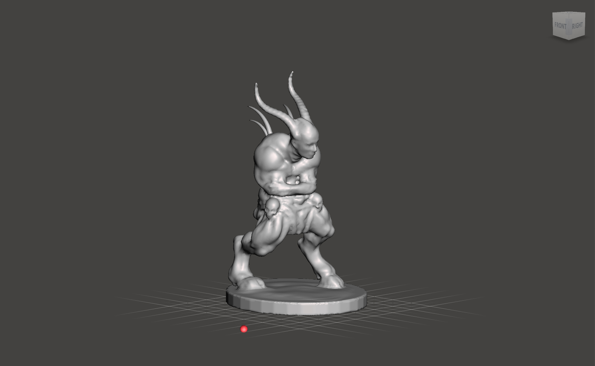

Anjali Suthar
Khruim
On the planet of Aurnis, in the northernmost reaches of the country of Yehmaviet, there was a village by the name of Yireil. It rested between hills that sloped down to the sea. Every spring these hills would become overflowing with purple blossoms called the yahviel, and it played an important role in the culture of the Yireillem who lived there, from medicine to cuisine to mythology. Its scent would overpower that of the sea all of spring. One year, however, the harshest winter in memory descended upon the land, and it lasted for many terrible years. The people of Yireil were divided— should they stay and risk dying of cold or starvation, or should they leave their ancestral land and find refuge elsewhere?
Eventually those who wished to leave left, and they traveled south and southeast. They took with them the yahviel, as a way to keep a part of their homeland with them. They traveled long and far, but no country wished to give them land to settle on, for those from Yehmaviet had long been shunned by outsiders. Eventually they came to Sólan, and there too the Queen was reluctant to deal with them, but for other reasons—her country had just declared war with otherworldly travelers known as the Shriliok from the planet Khhrashta, and she did not have the resources to deal with the Yireillem. However, she gave them a small island off the coast from Kirdag Solaria, Sólan’s capital. This land was unused, and had ample space to accommodate the Yireillem and whatever livestock survived the journey to Sólan.
While the Yireillem were rejoiced that they finally had found a new home, the climate and soil of Sólan was very different from that of Yireil. They feared the yahviel they had brought with them would not survive. However, according to legend, they were saved by a minor deity called Khruim that the Sólani had all but forgotten. Khruim is a monstrous-looking beast, with skin like dark leather, a face with tiny eyes, a large round nose, and fat protruding lips. He’s got hair like twigs, that grow not only on his head but on the back of his neck and across his shoulders, like the mane of a furry animal. He is said to tower over ten feet tall, but his spine has crumbled from the weight of time and the weight of the large horns that sprout from his head, making his height half of what it is. Khruim had once been the caretaker of the garden of the gods, but was exiled to the land of the mortals for creating new flora without the gods’ permission. The mortal Aveis fled in fear at the sight of him. For millenia, Khruim wandered the land alone, caring for the plants and animals, until one day he used his powers to create a new fruit as a gift to the Aveis. Seeing that Khruim was kind and gentle, they began to accept him, and under his touch their crops flourished.
When Khruim heard that the Yireillem’s beloved flowers were in danger of perishing in Sólan’s hot, dry climate, he immediately traveled to the island by way of his underground tunnels, which he created by digging with his horns, casting aside large amounts of earth with each sweep of his head. He tended to the blossoms through the night, blessing each one with his touch. When morning came, Khruim was long gone, but the Yirellem awoke and saw that the yahviel was thriving stronger than ever. Since then, Khruim became as important to the Yirelleim as the rain and the sun, and every garden is adorned with his symbol on its gates.